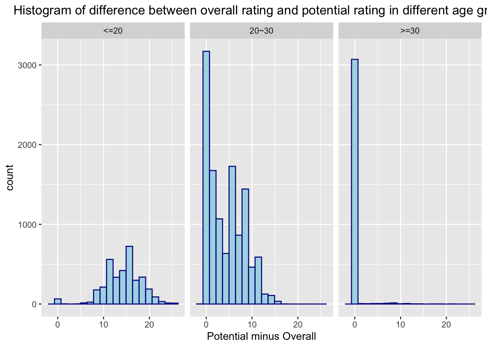
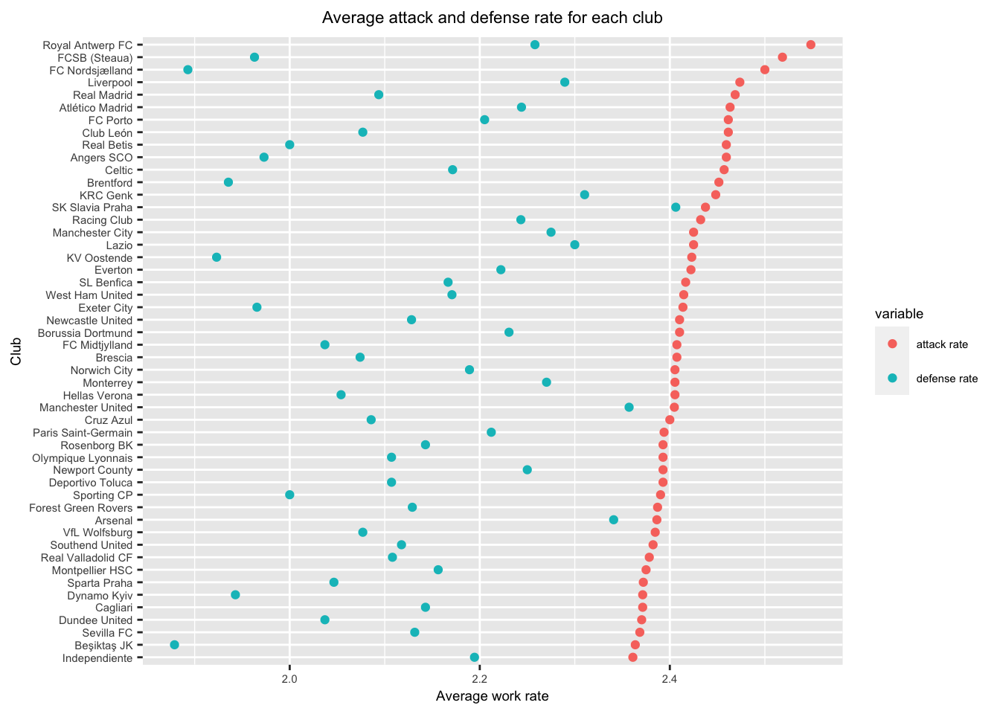
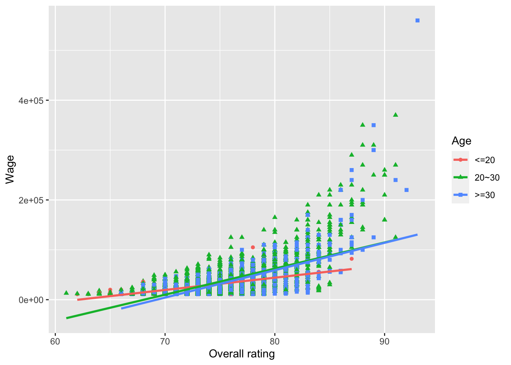

Chapter 5 Results
5.1 Average rating for different age groups
Commentary: This graph illustrates the average overall ratings for players in different age groups. From the bar chart above, we can conclude that players whose age is between 30 and 40 years old have the highest average rating. This finding is accord to the true story since the most famous football players like Lionel Messi and Cristiano Ronaldo are both over 30 years old and are at their peak period. Players who are less than 20 years old typically are still in an unfledged phase; thus, their ratings are typically lower than players who are above 20. Players who are greater than 40 years old also have a lower average rating since their ability has decreased as their ages increase and physical power decreases.
5.2 Histogram of Difference between Potential and Overall rating in different age groups

Commentary: The x-axis of the histogram above represents the difference between potential rating and overall rating of the players(Potential-Overall). The y-axis represents the count of the difference. For players less than 20 years old, most of their potential ratings are 10 to 20 lower than the overall rating. For players whose age is between 20 and 30, most of them have difference of 0, which means their overall rating equals potential rating. Some of them also has a difference between 1 and 15. Most of the players between 20 and 30 have equal value in their potential and overall rating. However, some of them has not be recognized fully by their potential. For players who are older than 30, almost all of the players have same value of potential and real rating. Since they are at the end of their football career, they should have be correctly rated.
5.3 Clubs that have the highest attack rate

Commentary:The Cleveland dot plot above illustrate the average attack rate and average defense rate of clubs. The attack rate has three level 1 to 3. Level 1 means low, level 2 means medium and level 3 means high. We clean the data to find out the average level of attack rate and defense rate for all the players in each club. We also filter the club size that should be more than 25. We plot the 50 clubs that have the highest attack rate and order the dot by attack rate in descending order. We find out that Royal Antwerp FC has the highest average attack rate over all of its players. SK Slavia Praha and Manchester United has more balanced performance:both attack rate and defense rate are high.
5.4 Relationship between wage and rating in different age group

Commentary:The scatterplot represent the relationship between rating and wage of the player. We remove all the wages that equal to 0. We find out that the wage has a positive relationship to the overall rating. The trend is almost same for players in 20~30 years old and those who is greater than 30 years old. For younger players who is less than 20 years old, the slope of the regression line is smaller compared to other age groups, which means that they are not fully paid by their rating. Younger players typically earn less even though they have the same rating score.
5.5 Is left-foot players more talented?

Commentary: The mosaic plot shows that left-foot players are less than the right-foot players. In each group, weak_foot scored 3 is the most common subset. The portions of the most talented players (skill_moves scored 5) in every single subset are almost the same, which indicates that there is no evidence to show that left-foot players are more talented than the right-foot players. However, the proportion of the talented players (skill_moves scored 4) in left-foot athletes is slightly higher than that in the right-foot athletes. Thus, we conclude the left-foot players are slightly more talented than the right-foot players.
5.6 Relationship with a player’s rating in different positions

Commentary: Due to our dataset contains too many player-positions, only 11 crucial roles are selected. By checking the parallel coordinate plot above, we can see that LF and CF are replaceable with each other since the value of those two positions are almost the same. The relationship among LM, CM and CAM are relatively weak. However, it shows a strong negative relationship between CAM and CDM due to the lines are twisted. We could also see the negative relationship between CDM and ST as well as ST and LB. The relationship among LB, LWB and CB is hard to figure out.
5.7 Relationship with a player’s rating in different abilities
Commentary: The parallel coordinate plot of players different skills indicates that there are a few players scored low in every skills listed above. The reason of that is because those players are Goalkeepers whose abilities are not represented by the skills in the chart. In this way, by analyzing players in other positions, it’s easy to find out that Heading_accuracy is negatively associated with Dribbling. Players who are good at Dribbling are also perform well in Ball control as well as in Short passing. There is a strong negative relationship between Long shots and Standing tackle. Those players do well in Standing tackle would also do well in Sliding tackle, however, these players are bad at Finishing.
5.8 Are there a lot of players both strong and fast?

Commentary: The heatmap indicates that most players are both medium in Strength and Speed. There are a few athletes that are beyond medium both in speed and strength. However, there is no player that is super-fast in speed but also very strong in strength.
5.9 What ability is most related to ST players?

Commentary: The pair scatterplot reveals the relation between ST score and every single players’ skills. The strong correlation are painted pink. Yellow represents medium and blue stands for the weak correlation. The abilities that are most related to ST performance are: Crossing, Finishing, Short_passing, Volleys, Dribbling, Ball_control, Reaction, Shot_power and long_shot.
5.10 Distribution of overall rating in some famous club

Commentary: The club-overall boxplot indicates that FC Bayern München is the only club that the median of overall score is greater than 80. Real Madrid and Juventus are nearly the same which equals to 80. The player that gets the highest score belongs to FC Barcelona. Players’ overall score are pretty close in FC Bayern München as well as in Napoli and Milan. By considering the median, extremum and the distribution of overall score, we believe the top 3 clubs are FC Bayern München, Juventus and FC Barcelona.